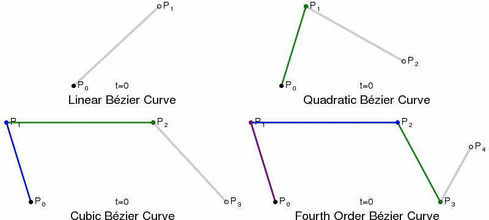

What are fonts?
Part 1: Vectors and point structures

A
B

Animated Bezier Vectors, Wikimedia Commons
Digital letterforms are made of mathematical
equations, as functions of time

H
H
H
→
H
←
H
H
H
| Axis Tag | Description | Valid Range |
|---|---|---|
| wght | weight | 1—1000 |
| wdth | width | >0, percent of normal width |
| opsz | optical sizing | >0, point sizes |
| ital | italicization | 0—1 |
| slnt | slant | -90—90 |
| Axis Tag | Description | Valid Range |
|---|---|---|
| wght | weight | 1—1000 |
| wdth | width | >0, percent of normal width |
| opsz | optical sizing | >0, point sizes |
| ital | italicization | 0—1 |
| slnt | slant | -90—90 |

fantastic
fantastic
$
Pentameter
Part 2: An approach to a variable font
Italic
handwritten monospace
monospacing
monospacing
monospacing
Pentameter Variable
(noun)Seasons in Pentameter
Part 3: A live specimen

Variation as a function of time
Variation as a function of [any input]

Axis of Variation as a Live Interface
Technology is the active human interface
with the material worldUrsula le Guin, A Rant about “Technology”
Thank you!
Reach out: marie@occupantfonts.com
More on variable fonts at: variable.occupantfonts.com